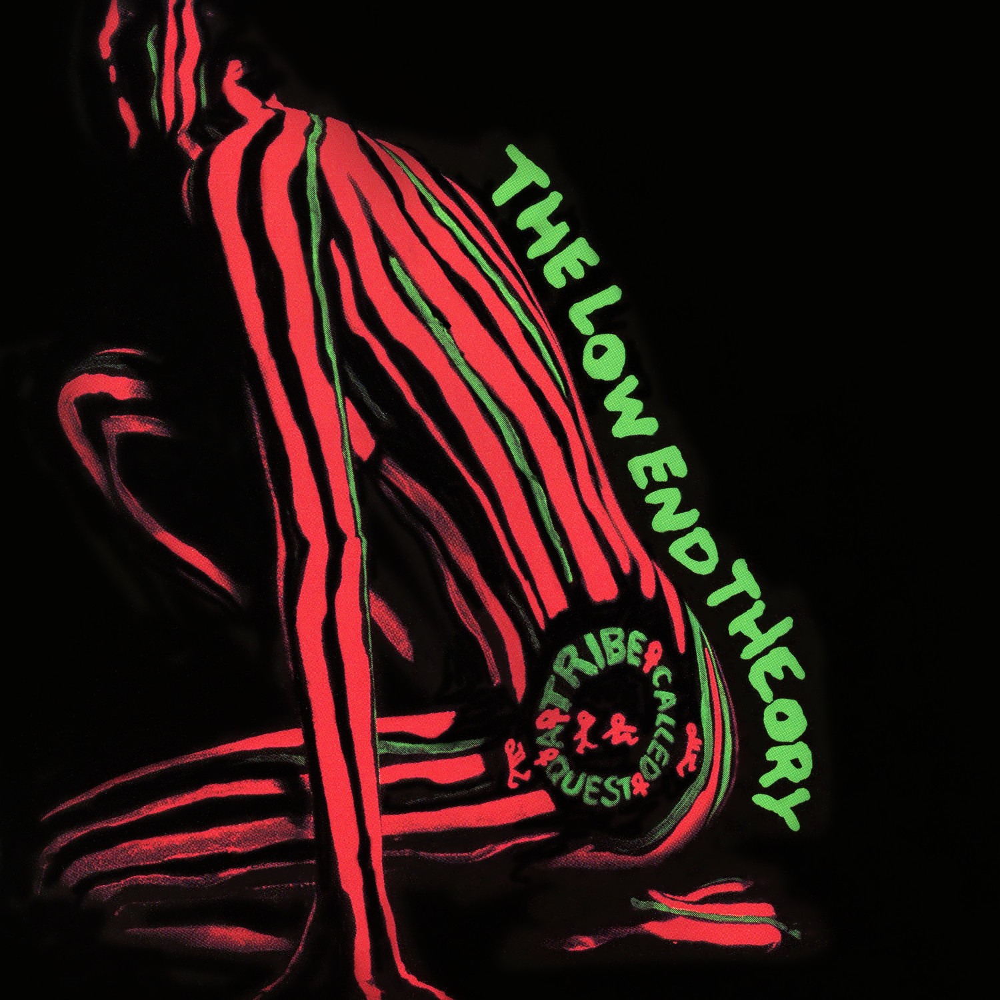
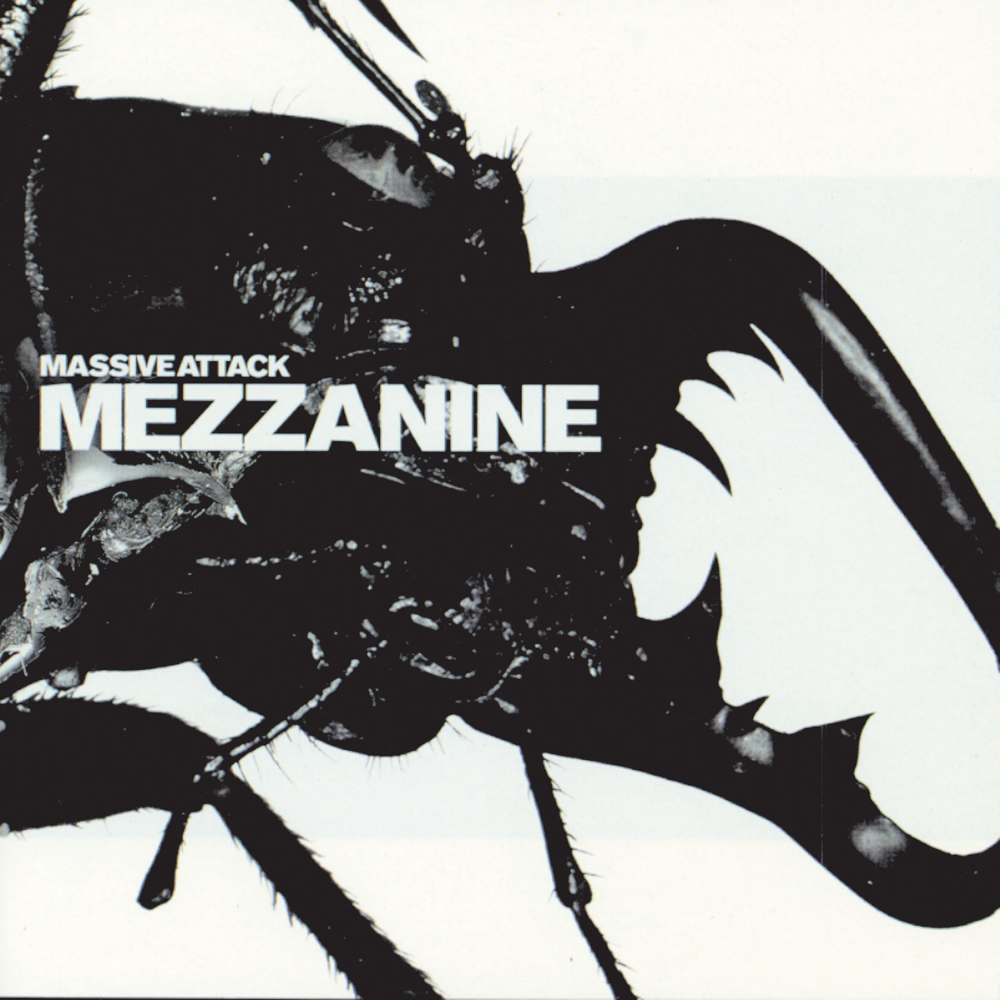

Renowned Albums

Discovery
Daft Punk

Random Access Memory
Daft Punk

The Black Parade
My Chemical Romance

The Low End Theory
A Tribe Called Quest

Mezzanine
Massive Attack
Mezzanine
Massive Attack